This exam covers scientific method, climate science and electricity (including magnetism) and waves, light and heat.
Section A: Multiple choice (21 marks)
The aim of the scientific method is:
This is the answer given in the marking key. Basing conclusions on evidence is also an important feature of the scientific method.
Use this information for Questions 2 and 3. "I have the memory of a goldfish!"
Goldfish are said to have short memories: it's assumed they quickly forget what they learn about their environment and other organisms. However, goldfish can be trained to respond to stimuli, e.g. to link a flashing light with feeding time. The proposed research aims to find the time between training and when the goldfish fail to respond to a trained stimulus (they "forget" their training), to find how long goldfish keep their memory.
Which is a good research question for the proposed research?
Which is a good testable hypothesis based on the background information?
Use this information for Questions 4 and 5. Diogo and Diaz are investigating a bungee cord. The cord stretches when the person attached to it jumps from a high point, slowing them down so they bounce up and down safely. They are told that the extension of the cord depends on the length of the cord and the weight of the jumper. They want to carry out a fair experiment to test this.
Which statement about carrying out a fair experiment is correct?
Diogo and Diaz plan one experiment on the bungee cord. Which is a correct combination of independent variable (IV) and dependent variable (DV)?
When reporting on uncertainty and errors in an experiment, which should not be included?
Trent notices that a burette's scale is reversed: the reading decreases as the liquid level goes up. The best explanation is that:
Which statement about greenhouse gases is false?
Most of the atmosphere is nitrogen and oxygen, which are not greenhouse gases.
Which stage of the carbon cycle "captures" carbon?
Which is not a renewable energy source?
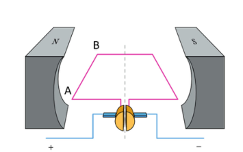
Which correctly describes the direction of the force on side AB of the motor above?
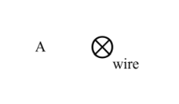
Using the symbol and the right-hand grip rule, what is the direction of the magnetic field at point A, to the left of the wire?
Current into the page gives a clockwise field, which points up on the left of the wire.
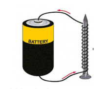
What is the best way to increase the strength of this electromagnet?
The resistance of a sample of nichrome wire is R = ρL / A, where A is the cross-sectional area, L is the length and ρ is the resistivity. Which statement is correct?
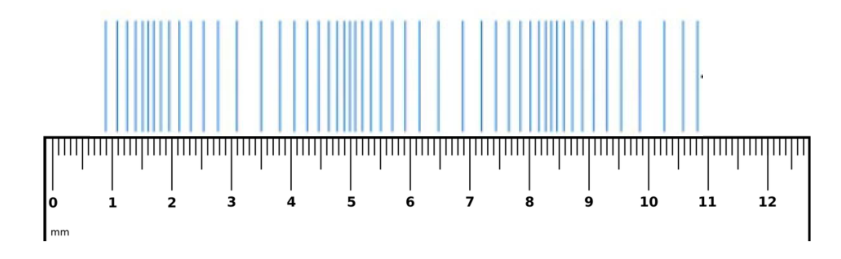
Use the ruler to estimate the wavelength of the wave above.
Measure from the centre of one compression (bunch of lines) to the centre of the next.
A sound wave with a period of 0.004 s is played through a speaker. Its frequency is:
f = 1 / T = 1 ÷ 0.004 = 250 Hz.
Which of these is an example of luminescence?
The other three give off light because they are hot (incandescence).
Which part of the eye detects light levels?
Which material is translucent?
Which type of electromagnetic radiation has the longest wavelength?
Which type of radiation is next to visible light in the electromagnetic spectrum?
Section B: Short answer (56 marks)
Question 1 (17 marks)
Alisson and Virgil are investigating factors that affect the rate of a chemical reaction. They use hydrochloric acid and sodium thiosulfate, two clear solutions that react to form a white precipitate, making the solution milky. The rate of reaction is measured by the time for the solution to turn milky. They test the effect of temperature, by heating the sodium thiosulfate before mixing it with the acid.
Apparatus: hydrochloric acid (1 M); sodium thiosulfate (0.1 M); 250 mL measuring cylinders; 250 mL beakers; stirring rod; thermometer; Bunsen burner; tripod; heat mat; gloves.
State a research question based on this information.
What is the effect of temperature on the rate of reaction (between hydrochloric acid and sodium thiosulfate)?
Write a hypothesis that could be tested.
If the temperature is increased, the time taken for the solution to turn milky will decrease, because the rate of reaction increases.
Based on your hypothesis, identify the variables.
IV:
DV:
For a fair test, only one variable is changed. List two aspects of the chemicals that must be kept constant throughout the experiment.
The same concentration of each chemical, and the same volume of each chemical.
Hydrochloric acid is corrosive and the Bunsen burner is hot. Suggest two safety measures to reduce the risk of injury.
Any two: wear safety goggles; wear a lab coat; wear gloves; use tongs or heatproof gloves for hot equipment; tie back long hair near the Bunsen burner.
Their results:
| Temperature of sodium thiosulfate (°C) | Trial 1 (s) | Trial 2 (s) | Trial 3 (s) | Average time (s) |
|---|---|---|---|---|
| 20 | 4.81 | 4.89 | 4.78 | 4.83 |
| 30 | 3.21 | 3.18 | 3.07 | 3.15 |
| 40 | 2.45 | 7.42 | 2.37 | 4.08 |
| 50 | 1.88 | 1.88 | 1.88 | 1.88 |
| 60 | 1.55 | 1.55 | 1.55 | 1.55 |
| 70 | 1.29 | 1.29 | 1.29 | 1.29 |
On graph paper, plot the averages, with a suitable title and axis titles with units. Describe your graph, then compare.
- Points plotted correctly (2 marks).
- A title, e.g. "Reaction time vs temperature" (1 mark).
- Axes: temperature (°C) on the horizontal axis and time (s) on the vertical axis (2 marks).
The points fall as the temperature rises, except the point at 40 °C, which sits well above the trend.
Which data point is likely to be an outlier? The average at °C (caused by trial 2: s).
Suggest a possible reason for this outlier.
An error in trial 2 at 40 °C: a gross reading or recording error (e.g. the stopwatch was stopped late or the time was written down wrongly).
Write a conclusion that answers the research question and addresses the hypothesis.
The hypothesis is supported: as the temperature increases, the time taken for the solution to turn milky decreases, so the rate of reaction increases.
A student rubs a balloon on a wool jumper, then brings it near a large positively charged sphere. The balloon is repelled. Explain this, referring to the balloon's charge and how it became charged.
Electrons were stripped from the balloon, making it positively charged (1 mark). It is then repelled by the positively charged sphere, because like charges repel (1 mark).
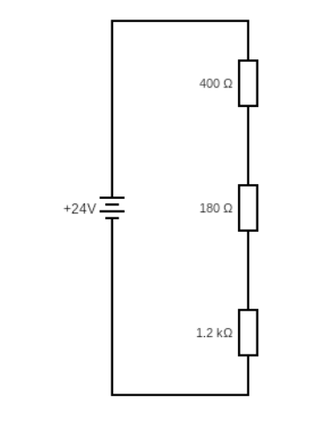
Calculate the total resistance of the circuit above. (1 kΩ = 1000 Ω.)
400 + 180 + 1200 = 1780 Ω.
Draw (on paper) a circuit with: a 6 V battery; a globe and a 50 Ω resistor (labelled) in series; an ammeter; and a voltmeter measuring the voltage across the globe. Describe it, then compare.
A single loop with the 6 V battery, the globe, the 50 Ω resistor and an ammeter (which can be anywhere in the loop) all in series; the voltmeter is connected in parallel across the globe only. 1 mark each for the components in series, the ammeter and the voltmeter.
Calculate the resistance of a heating element that draws 7.8 A when 230 V is applied, to the nearest whole number.
R = V / I = 230 ÷ 7.8 = 29.49 ≈ 29 Ω.
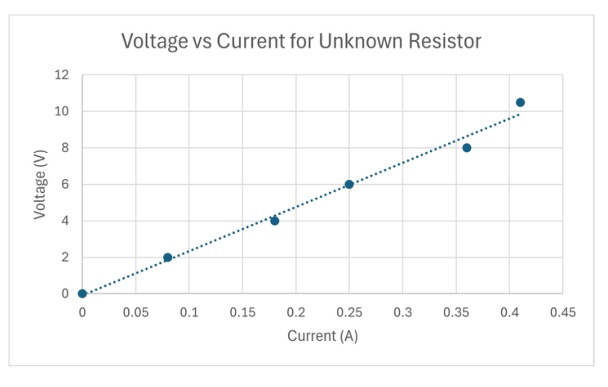
Use the trendline of the graph to find the value of the resistor.
R = gradient = 6 ÷ 0.25 = 24 Ω.
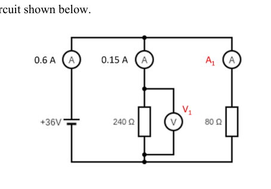
Find the missing voltage and current in the circuit above.
V1: V
A1: A
Parallel branches have the full supply voltage (36 V). A1 = 0.6 − 0.15 = 0.45 A.
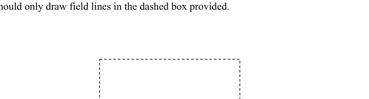
Draw (on paper) four continuous magnetic field lines joining the poles of the magnets, only in the dashed box. Describe your drawing, then compare.
An N pole faces an S pole, so the poles attract: the field lines go straight across the gap from N to S (1 mark for the shape), with arrows pointing from the N pole to the S pole (1 mark for the direction).
James and Conrad are analysing a small wind turbine. Connected to a load circuit, it gives a current of 35 mA and a voltage of 1.7 V. Calculate the turbine's power output in mW.
P = VI = 1.7 × 35 mA = 59.5 mW.
Question 10 (10 marks)
The graph shows a light wave from a coloured torch. The x-axis shows distance in nanometres (1 nm = 10−9 m).
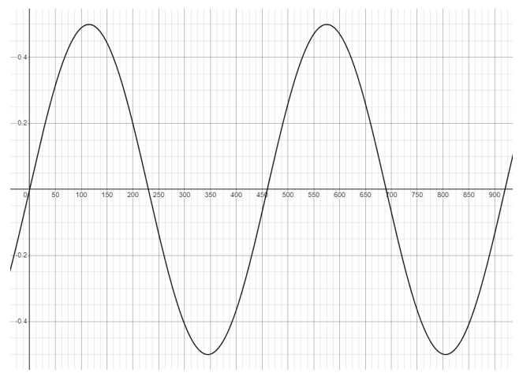
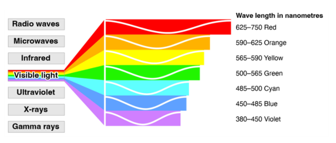
State the wavelength of the light wave in nm.
What colour of light is this wavelength?
A green laser now replaces the torch and shines on a white wall. The green light has a wavelength of 500 nm (5.0 × 10−7 m).
If the green light passes through each filter, what colour would you see?
Yellow filter:
Magenta filter:
A yellow filter lets red and green through; a magenta filter lets only red and blue through, so it blocks green.
What other coloured torch could be shone on the wall to make yellow overall?
The speed of light is 3.0 × 108 m/s. Calculate the frequency of the green light.
f = c / λ = 3 × 108 ÷ 5 × 10−7 = 6.0 × 1014 Hz.
The green laser is used to find the altitude of the International Space Station. The light reflects off the ISS, and the total time (surface → ISS → surface) is 0.00272 s. Calculate the distance to the ISS.
d = v × t = 3 × 108 × (0.00272 ÷ 2) = 408 000 m = 4.08 × 105 m (408 km).
Question 11 (6 marks)
Students are experimenting with a mirror. Parallel light rays are shone from the left, shown by the three arrows.
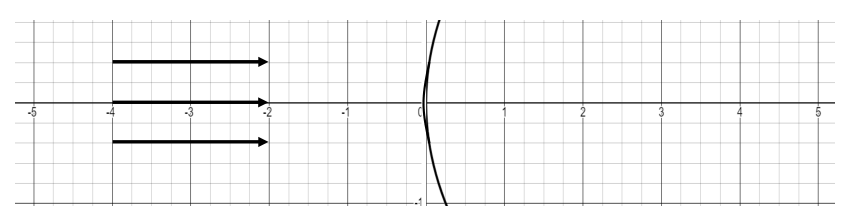
On paper, continue the three rays as they reflect off the mirror, and use ray tracing to find and label the focal point. Describe it, then compare.
The mirror is convex, so the rays reflect and spread out (diverge) (2 marks). Extending the reflected rays backwards (dashed lines) behind the mirror, they meet at the focal point F, which is behind the mirror (2 marks).
Based on your diagram, estimate the focal length of the mirror.
About 1 cm: the distance from the mirror to where the extended rays meet behind it. (Answers will vary with your diagram.)
What is the nature of this focal point?
Question 12 (4 marks)
The diagram shows a wave travelling from medium A into medium B. The incident ray makes 30° with the normal (the dashed horizontal line). The refracted ray in B makes 35° with the boundary.
State the angle of incidence.
State the angle of refraction.
Angles are measured from the normal: 90 − 35 = 55°.
Which medium is more optically dense?
The light bends away from the normal going into B, so it speeds up: A is denser.
Is total internal reflection possible when light travels from material A to material B?
Yes: the light goes from slow (dense) to fast, so above the critical angle it would be totally internally reflected.
Explain, using the principles of heat transfer, how a land (offshore) breeze happens at dawn. You can use a labelled diagram.
- Overnight, the land cools more quickly than the water, so the air above the sea is warmer than the air above the land (1 mark).
- The warmer air over the sea is less dense, so it rises (1 mark).
- Cooler air from over the land flows out to replace it, creating a convection current: the breeze blows offshore, from the land to the sea (1 mark).